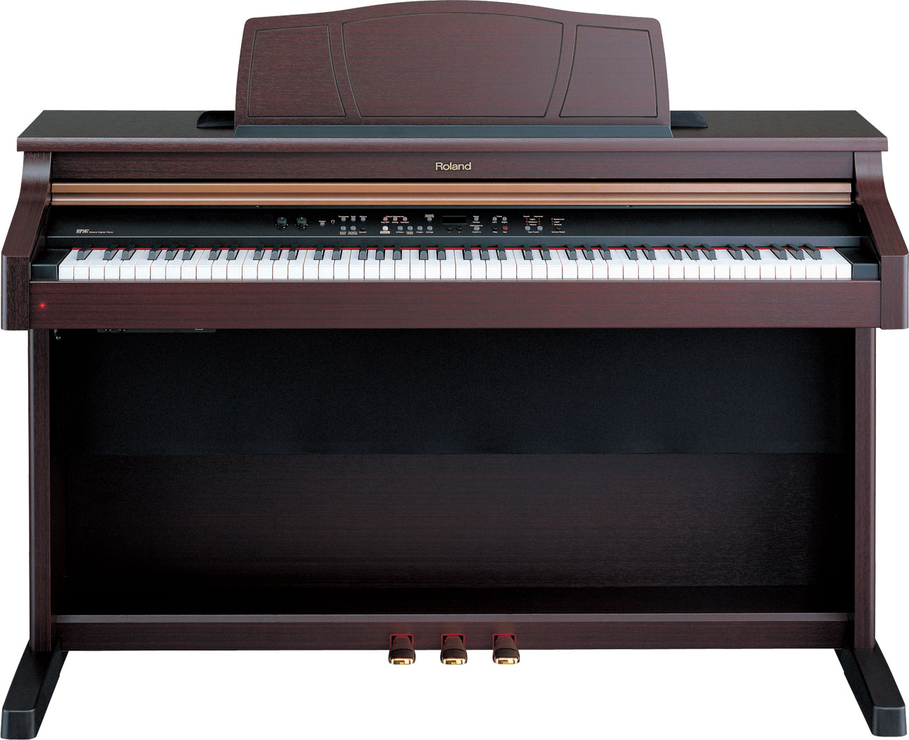

Roland Digital Piano
An Ideal Digital Piano for Your Home
The Roland RP301 Digital Piano is a great choice for your home, school, or church. An ideal instrument for students and hobbyists, the RP301 is packed with skill-building feature such as an onboard metronome, a recorder, and Roland's Twin Piano feature, which gives you, sessentially, two 44-key pianos - each with its own sustain pedal! This makes the RP301 perfect for lessons or duets. The RP301 boasts Roland's acclaimed Ivory Feel-G keyboard and SuperNATURAL Piano engine. If you're in the market for an affordable, good-looking digital piano with satisfyingly realistic feel and sound, give the Roland RP301 an audition.
Super Natural Piano engine gives you stunningly realistic piano sound
The Roland RP301 Digital Piano is powered by Roland's cutting-edge SuperNATURAL piano sound engine. This cutting-edge technology brings heightened sonic authenticity and enhanced natural performance to digital pianos. Roland engineers painstakingly analyzed the complex characteristics of concert grand pianos, accurately capturing and reproducing the tonal variations based on the velocity of each keystroke. With enhanced velocity response, note decay and key-range behavior, SuperNATURAL gives you exceptionally realistic and natural acoustic piano sound and playing feel.
Practice and performance features
The Roland RP301 Digital Piano is loaded with features that enhance the learning process. Twin Piano effectively lets you split the keyboard into two parts - each with identical note range and its own sustain pedal (in this mode, the left and right pedals each have the damper function). Twin Piano is ideal for lessons and duets, but that's not the RP301's only skill-building feature. Built-in metronomes and recorders let you practice with a perfect time reference, and also record and listen back to your performances - critical for polishing your chops. There's also an onboard song library that includes a selection of classical piano etudes - a fabulous reference for your practice sessions!
Ivory Feel-G Keyboard gives you satisfying, natural acoustic piano feel
The Roland RP301 Digital Piano sports Roland's Ivory Feel-G keyboard featuring the company's acclaimed Progressive Hammer Action with Escapement. In the RP301, advanced sensor technologies work together with with the SuperNATURAL Piano engine, serving up performance and playing expressiveness that rivals that of many high-end pianos. With the appearance, texture, and functions of keyboards found on Roland's flagship pianos, the RP301's Ivory Feel-G Keyboard gives you an exceptionally natural and satisfying playing experience at a very affordable price.
Roland Digital Piano Specifications:
o Number of Keys:88
o Number of Voices (Sounds):30
o Polyphony: 128 voices
o Number of Effects: 5
o Effects Types: Reverb, Brilliance; Piano only: String, Damper, Key Off Resonance
o Sequencer: 1 track
o Song Playback: 10
o Number of Speakers: 2 x 4.72"
o Amplifier: 12W x 2, etc.
o Number of Audio Inputs: 1 (stereo)
o Audio Input Types: 1 x 1/8" TRS
o Number of Audio Outputs: 2
o Audio Output Types: 2 x 1/4"
o MIDI I/O: In, Out
o Number of Pedals: 3
o Pedal Inputs: No pedal inputs
o Height: 32.875"
o Width: 54.25"
o Depth: 16.75"
o Weight: 86 lbs.